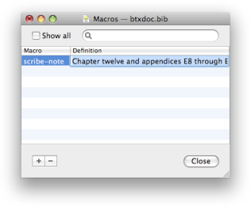

Editing a Document's Macro Definitions Editing a Document's Macro Definitions
Editing a Document's Macro Definitions Editing a Document's Macro DefinitionsYou can edit the macros of a document by choosing "Macros" from the "Window" menu, or typing the keyboard shortcut ⇧⌘M . See the BibTeX Intro for more information of macros in BibTeX, and Editing Fields with Macros on how to use macros in references.

Macro definitions consist of a pair of a macro key, which is used in the raw BibTeX string, and a definition string. The definition can in fact be a raw BibTeX string, containing macros itself.
You can add a macro definition by pressing the "+" button. Pressing the "-" button removes the selected macro defintions. You can edit the key and the definition value by double clicking the corresponding cell in the table, or by pressing the return key when an item is selected. See Editing Fields with Macros about how to edit the definition value as a raw BibTeX string.
For quick searches through the list without using the mouse, you can type a few characters of any word in the definition string you are looking for, and that item will be selected for you. This is helpful for looking up macro keys when adding references.